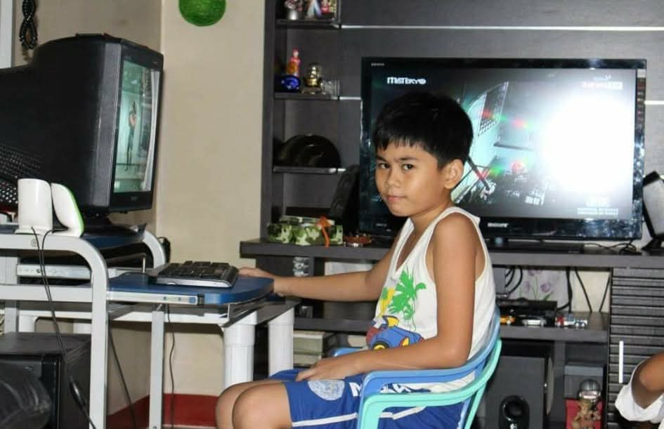
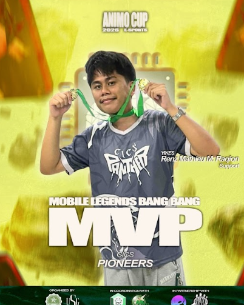
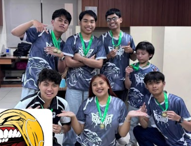
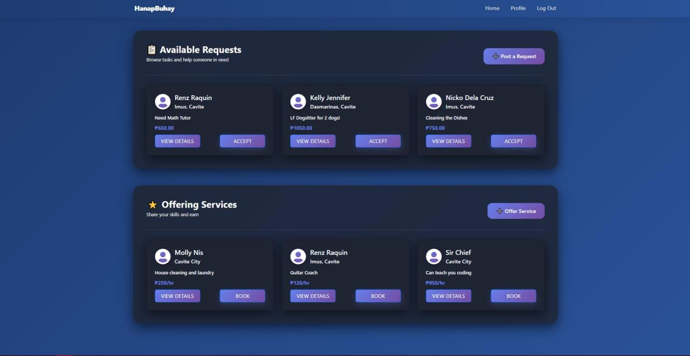
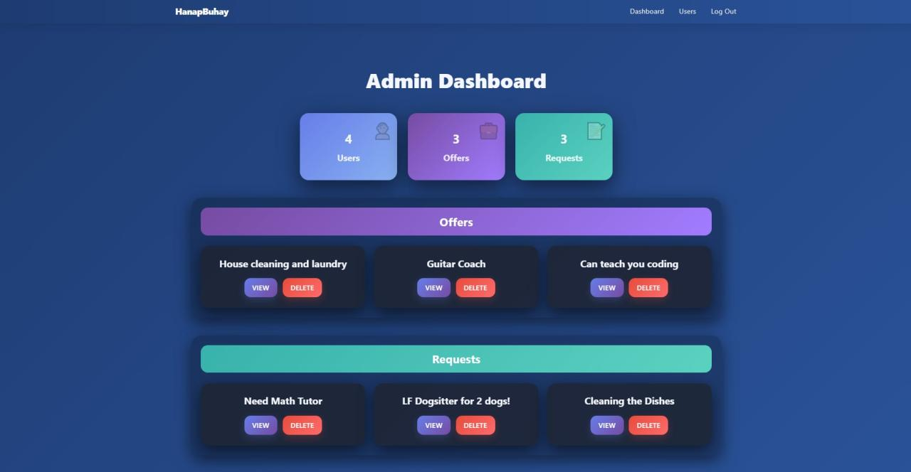
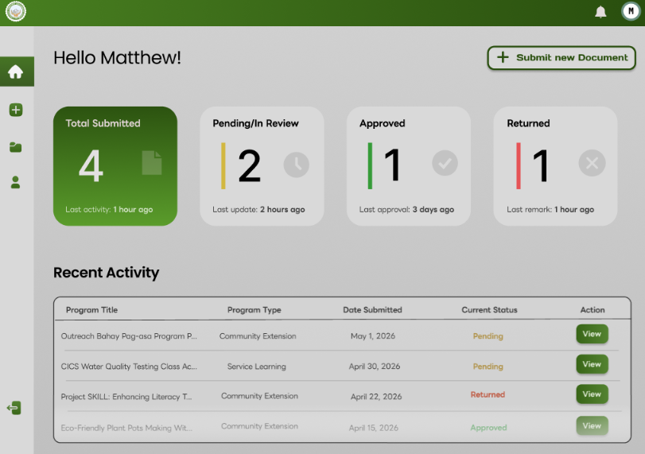
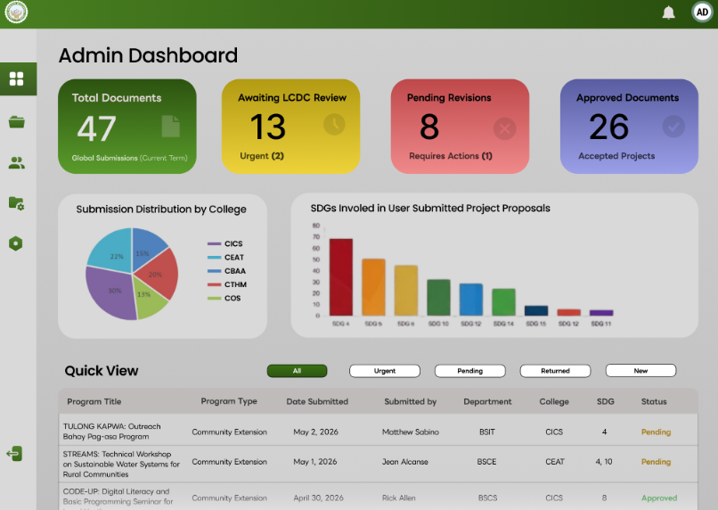

Renz Mathieu M. Raquin
Information Technology Student at DLSU-D
Welcome to my Website!
About Me
Hello! I am 21 years old, and I am an aspiring Web Developer who loves creating, learning new things, and Cybersecurity. Ever since I was a child, I already was very interesting in computers, may it be playing video games on it or its parts and components, I've been a computer enthusiast from the start. Fast forward to today, I am passionate in the digital space in general, as seen in my history of competing in video games as well as my projects and ventures in being an IT student at La Salle. I hope you enjoy visiting my website and feel free to share it with others. Thank you!



My Hobbies and Interests
- Watching Movies & TV Shows
- Listening to Music
- Graphic Designing
- Playing Videogames
- Cybersecurity
- Favourite Website: Crunchyroll
Skills
- Javascript
- Java
- CSS
- React.js
- PHP MySQL
- Python
- Full-Stack
- Internet of Things (IoT)
Featured Projects


HanapBuhay: A Web-Based Micro Job Posting Platform designed to connect people across the community
This is a project I accomplished together with a partner where we utilized React.js for a dynamic frontend, integrated with a PHP and MySQL backend via XAMPP. It was an intensive development journey where I encountered a lot of technical hurdles, errors, and "breaking" bugs. However, thanks to those challenges, I also learned how to effectively debug complex integration issues and optimize database queries for better performance. Dealing with those critical errors firsthand taught me the importance of writing clean, maintainable code and utilizing version control to properly track my progress. Overall, it turned every error into a valuable lesson in software architecture and full-stack synchronization.


A Web-Based Document Management System for The Lasallian Community Development Center In De La Salle University - Dasmariñas
A system designed to automate and optimize the submission and management of documents between faculty members and LCDC administrators.
Testimonials
Harvey Laurence P. Rullan
“Renz is a dedicated web developer who delivers creative, responsive, and engaging websites.”
Precious Chloe L. Magpale
You can tell Renz actually knows the code, everything just flows. Genuinely impressed.
Lorep Ipsum
Lorep Ipsum.